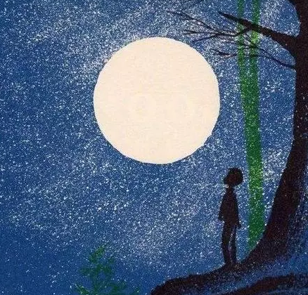

第六版
第六版

西电的春天来的措不及防。我从北国的银装素裹一片寂然，回到早已被春意浓浓包裹的西电。仿佛跨过了几重岁月，略过流淌的时间。我们又恢复了忙忙碌碌的生活。急匆匆的上课，急匆匆的做实验，急匆匆的赴约……急匆匆的，又可曾愿意，驻足山花烂漫？
也是在这样的一个春天，我走在在满是六便士的大街上，他，却抬头看见了月亮。那个春天我读到了《月亮与六便士》，是英国小说家、剧作家毛姆的代表作，虽文笔并不令人惊诧，但是足以凭借它的内容震撼到你。人到中年的银行家查尔斯，已经事业有成，但是他的心里始终有一个绘画梦想。它躁动着、不安着，终于他决定抛妻弃子，来到南太平洋的一座孤岛，开启了曾经梦想的生活，一系列惊世杰作诞生了。可是，他又何尝不是命运的弃子，功成名就之时，绝症与双目失明裹挟着他。他还是离开了他曾热烈追求过的生活。
“艺术是感情的表达，感情是人类共同的语言”。《月亮与六便士》并不是毛姆最具代表的作品，但我认为这是毛姆最浪漫的作品。毛姆不太会为了戏剧性刻意制造巧合，也不会为了情节拽着人物性格强硬的走，瑰丽绚烂的手法亦不多。不同于同时代的英国现实主义作家，他喜欢讲故事，讲出自己的浪漫主义，或许，他心里那个烂漫的少年、那个饱含感情的少年，从未离开，依然在做着自己的梦。
“「你想想，假如人人都像你一样，这世界就完了。」
「哪来的蠢话。不会人人都像我一样，多数人甘愿循规蹈矩。」”
确实，我们中的大多数人，并不是世界这部剧的主角。我们在循规蹈矩的生活着，我们按部就班的走着，我们，不知不觉，把一天，过了三百六十五遍，又一个三百六十五遍。生活在这里，为了奔赴更好的未来，为了欣赏阿拉斯加的鳕鱼跳出水面，和华尔街壮丽的日出。但是在这个暖意融融的春天，樱花在悄悄的开放，也许是一个疾跑而过的人儿，那一瓣樱花，轻颤着，荡悠悠的飘下来，静悄悄的躺在，透过树荫的那一束阳光下，挡住了一只蚂蚁的前路。这个世界每天在发生着这么多故事，同时又蕴藏着那么多可能。也许某一天，你在西电的校园行走，忽然想起，哦，我曾经，其实还有过那样的梦想。
为梦想而活，在现在看来，未免有些幼稚。但是，生活若是失去了仅存的那一点，能让你奔赴的东西，庸庸碌碌终其一生，在世俗的眼光里，合群的表演着，成为了一个精致的利己主义者，华丽的谢幕、退场，粉饰着你日渐麻木感情。时间来的太快去的太快，梦想积聚了灰尘，不妨将它翻出，晒晒太阳，我不想要你和查尔斯一样，抛妻弃子远走他乡，我想要你在去上课的路上，驻足看一看海棠招摇，日出日落，潮起潮生。我想要你获得学习成就之外的快乐，开心的像个孩子一样，热烈的爱着生活。我想要你走到现在依然愿意去提起年少轻狂的梦想，来一场说走就走的，梦想之行。
追逐梦想就是追逐自己的厄运，在满是六便士的大街上，他抬头看见了月光。查尔斯走出了自己的舒适区，大胆忽略别人的眼光，成为了梦想的背包客。人生漫长，我愿在一天的劳累之后，走在大街上，看群星闪烁，照亮我回家的路，照亮心底的梦想。